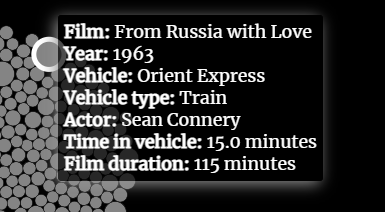

Every James Bond vehicle, visualised
By Thomas Colin
Data was provided by Koen Van den Eeckhout of baryon.be
Hover over the nodes to see the details of the vehicles.
Scroll down to see more
Land, Air and Sea
Oh, I travel... A sort of licensed troubleshooter.
Bond - Thunderball (1965)
Throughout the 25 Bond films, 007 has found himself in a variety of vehicles in the air, on land and at sea. Each vehicle is represented by a circle. The size of the circle represents how long Bond spent in the vehicle on screen.
Which Bond had the most vehicle scenes?
On average, Roger Moore's Bond spent the most time in vehicles with an average of 34% of the actor's film running time dedicated to an in-vehicle shot.

Daniel Craig's Bond spent the least amount of time driving, flying and saililng, with only 19% of the total time of his films spent in a vehicle.
Which vehicles does Bond find himself in most often?
M's orders, 007. You'll be using this Aston Martin DB5 with modifications. Now, pay attention please. Windscreen - bulletproof. As are the side and the rear windows. Revolving number plates, naturally. Valid - all countries.
Q - Goldfinger (1964)
The legendary 1964 Aston Martin DB5 appears 22 separate scenes across 8 of the Bond Films. The DB5 appeared in all but one of Daniel Craig's films.
Bond in the air
The films feature Bond in 67 different types of aircraft.

The longest scene was in Moonraker (1979), where Roger Moore's Bond follows the villain Hugo Drax into space. The climax of the film features a laser battle on Drax's space station. Moonraker holds the world record for the largest number of zero gravity wires in one scene.
Bond on land
Need I remind you, 007, that you have a license to kill, not to break the traffic laws.
Q - Goldeneye (1995)
The Aston Martin DB5 became one of the most iconic cars in film history. For Goldfinger (1964) Aston Martin originally did not want their car to appear in the film. The producers had to pay them to use the car. Following the success of the film, Aston Martin let them use as many cars as they wanted. For Spectre (2015), the company made 10 DB10s, of which 7 were destroyed during filming, at a total cost of £24 million.
Bond at sea
In 2013, Elon Musk bought the Lotus Esprit underwater car featured in The Spy Who Loved Me (1977) for £616,000.

The car was thought to be lost since its appearance in the film, but was rediscovered in a storage unit in 1989. The vehicle works as a submarine but not as a car, and reportedly cost over $100,000 to build in the 1970s.
60 years of James Bond
Since the introduction of the character into theatres in Dr No (1962), James Bond has appeared on-screen in 335 different vehicles.
Hopefully this data exploration was interesting. Special thanks to Koen Van den Eeckhout at Baryon Design for providing the data and Cuthbert Chow for his scroller template.
You can read the write-up of how I created this visualisation scroller at my blog, dataskunkworks.com.